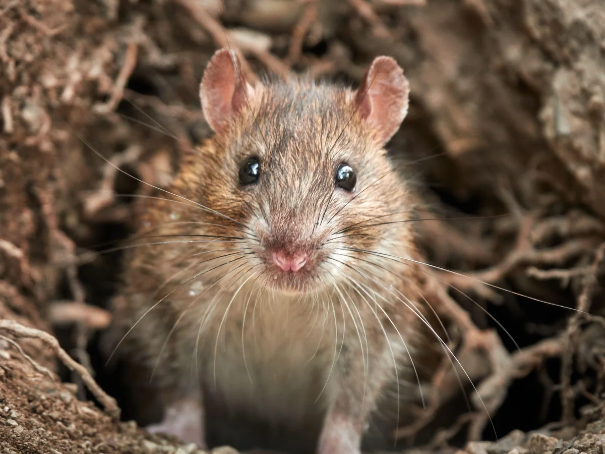
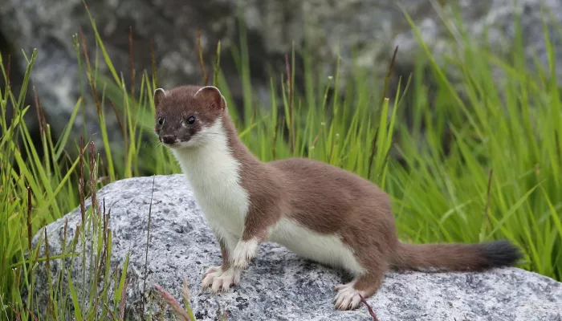
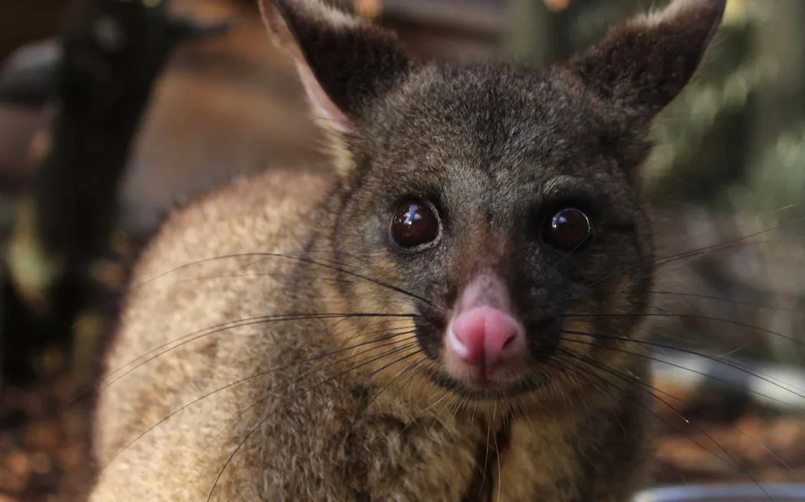

Threats & Conservation
Understanding the problems and finding solutions
Introduced Pests
Introduced animals such as rats, stoats and possums can have major effects on New Zealand's native ecosystems. They prey on native birds, eggs and chicks, compete for food and damage native plants. Many of New Zealand's native species evolved without land mammals, making them vulnerable to these introduced predators.
Predator control helps protect native species and restore ecosystems. Methods such as trapping and monitoring pest populations can reduce predator numbers. Schools and local communities can also participate in conservation projects to protect native wildlife and biodiversity. These efforts reflect kaitiakitanga by caring for the environment and protecting it for future generations.



Rats
Rats eat native birds, eggs, insects and seeds, reducing native wildlife populations. They also compete with native animals for food and can prevent plants from growing by eating their seeds.
Stoats
Stoats are skilled predators that hunt native birds, chicks, eggs and lizards. They are a major threat to New Zealand's native wildlife because many species evolved without mammalian predators and are not adapted to defend themselves against them.
Possums
Possums damage native vegetation by eating leaves, flowers and fruit, which can weaken trees and affect forest growth. They also compete with native birds for food and shelter, putting additional pressure on vulnerable species.
Conservation Solutions
Conservation groups and communities use different methods to protect Aotearoa's environment.